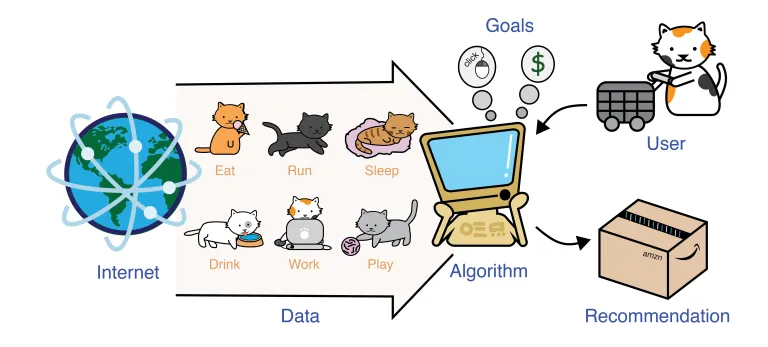

Topic Modelling and Text Classification Machine Learning Solution
Rijul_Sahu
July, 2019
Developed a scalable machine learning solution for automated topic modelling and text classification on large volumes of customer chat data. The solution enabled efficient extraction of actionable insights for predictive and descriptive analytics with minimal human intervention.

Description
The client required a system capable of automatically categorizing incoming customer chats into predefined topics. Using machine learning algorithms, the system first identified key themes within historical data and then classified new chat messages into appropriate topics for faster issue resolution and better customer understanding.
Key Challenges
-
Extracting meaningful insights from large amounts of unstructured text data
-
Executing complex classification algorithms at scale using traditional systems
-
Performance limitations due to slow RAM and restricted server storage
Solution
To enable high-speed processing and scalability, I designed and implemented a PySpark-based solution on a big data platform.
The automated pipeline performs the following steps:
-
Reads and cleans raw chat data through text preprocessing routines
-
Applies topic modelling algorithms to identify patterns and key discussion areas
-
Uses a classification model to automatically bucket unseen chats into relevant topics
By leveraging PySpark’s distributed processing capabilities, the entire pipeline executes within seconds even on large datasets. The final implementation achieved over 85% classification accuracy.
Key Benefits
-
Reduced total processing time to approximately 3 minutes
-
Delivered accurate and automated topic categorization with 98% less manual intervention
-
Enabled detailed insights on topics, sentiment, and resolution focus areas
-
Optimized computing efficiency by running in distributed mode
-
Minimized overall operational cost through full automation